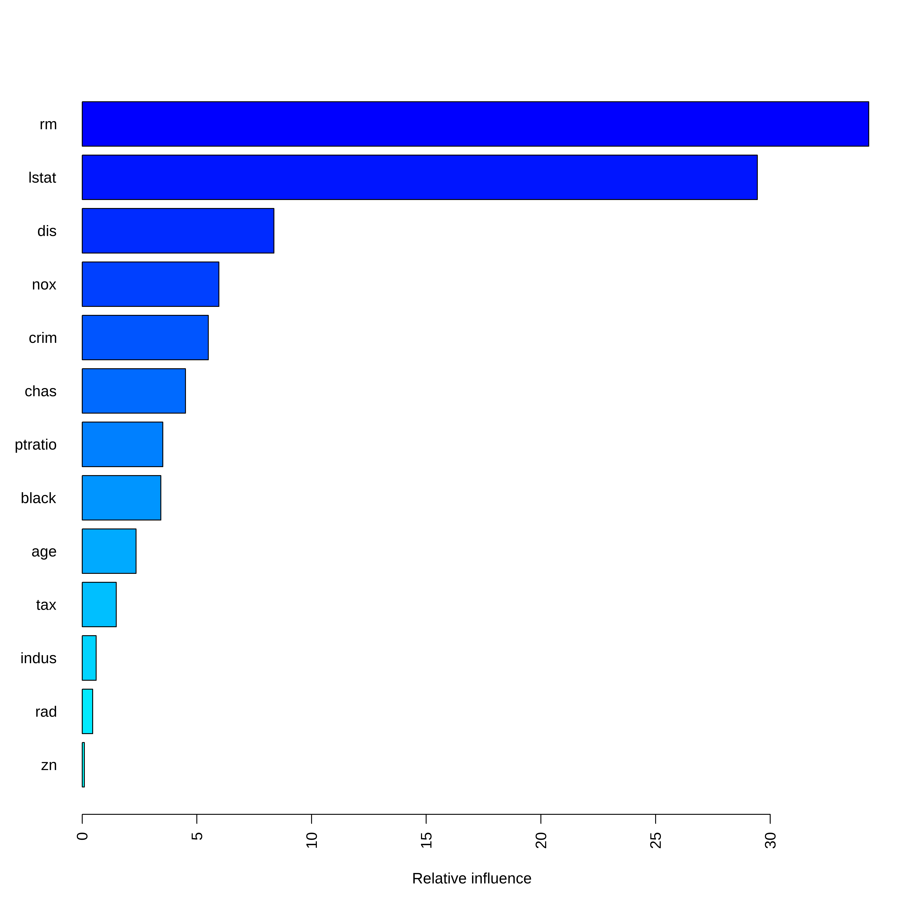
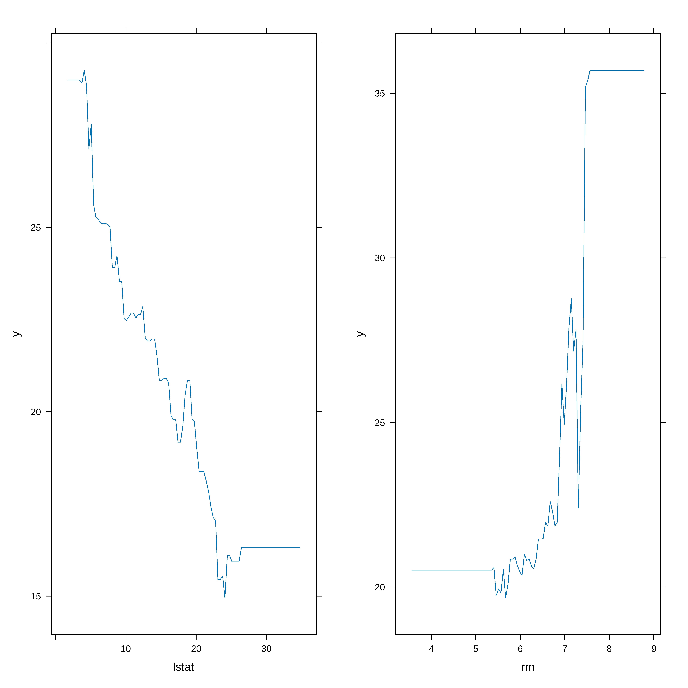

Arvores de Regressão - Gradient Boosting
Bibliotecas
Avaliando, selecionando dados
Treino e Teste com todas as variáveis
## Vamos criar os conjuntos de treino teste e desenvolver a arvore
## com todas as variáveis.
library(caret)Carregando pacotes exigidos: lattice
Attaching package: 'caret'The following object is masked from 'package:purrr':
liftset.seed(21)
indice <- createDataPartition(dados$medv, times=1, p=0.75, list=FALSE)
conj_treino <- dados[indice,]
conj_teste <- dados[-indice,]
head(conj_treino) crim zn indus chas nox rm age dis rad tax ptratio black lstat
1 0.00632 18.0 2.31 0 0.538 6.575 65.2 4.0900 1 296 15.3 396.90 4.98
3 0.02729 0.0 7.07 0 0.469 7.185 61.1 4.9671 2 242 17.8 392.83 4.03
4 0.03237 0.0 2.18 0 0.458 6.998 45.8 6.0622 3 222 18.7 394.63 2.94
5 0.06905 0.0 2.18 0 0.458 7.147 54.2 6.0622 3 222 18.7 396.90 5.33
6 0.02985 0.0 2.18 0 0.458 6.430 58.7 6.0622 3 222 18.7 394.12 5.21
7 0.08829 12.5 7.87 0 0.524 6.012 66.6 5.5605 5 311 15.2 395.60 12.43
medv
1 24.0
3 34.7
4 33.4
5 36.2
6 28.7
7 22.9head(conj_teste) crim zn indus chas nox rm age dis rad tax ptratio black lstat
2 0.02731 0.0 7.07 0 0.469 6.421 78.9 4.9671 2 242 17.8 396.90 9.14
10 0.17004 12.5 7.87 0 0.524 6.004 85.9 6.5921 5 311 15.2 386.71 17.10
12 0.11747 12.5 7.87 0 0.524 6.009 82.9 6.2267 5 311 15.2 396.90 13.27
16 0.62739 0.0 8.14 0 0.538 5.834 56.5 4.4986 4 307 21.0 395.62 8.47
19 0.80271 0.0 8.14 0 0.538 5.456 36.6 3.7965 4 307 21.0 288.99 11.69
23 1.23247 0.0 8.14 0 0.538 6.142 91.7 3.9769 4 307 21.0 396.90 18.72
medv
2 21.6
10 18.9
12 18.9
16 19.9
19 20.2
23 15.2Parametros do GBM
Loaded gbm 2.1.9This version of gbm is no longer under development. Consider transitioning to gbm3, https://github.com/gbm-developers/gbm3set.seed(21)
# treinar o modelo GBM
# gbm.fit <- gbm(formula = medv ~ .,
# distribution = "gaussian", # minimizar erro quadrático
# data = conj_treino,
# n.trees = 10000, # número de árvores
# interaction.depth = 3, # profundidade da arvore
# shrinkage = 0.1, # aprendizado rápido
# cv.folds = 5, # 5 envelopes de validaçõa cruzada
# n.cores = NULL, #
# verbose = FALSE)Criando um grid para avaliar os parametros e os respectivos RMSEs
Avaliando o grid de parametros
# Busca no grid
for(i in 1:nrow(hiper_grid)) {
#
set.seed(21)
# treina o modelo
gbm.tune <- gbm(
formula = medv ~ .,
distribution = "gaussian",
data = conj_treino,
n.trees = 6000,
interaction.depth = hiper_grid$interaction.depth[i],
shrinkage = hiper_grid$shrinkage[i],
n.minobsinnode = hiper_grid$n.minobsinnode[i],
bag.fraction = hiper_grid$bag.fraction[i],
train.fraction = .75,
n.cores = NULL,
verbose = FALSE
)
# adiciona os erros de treino e arvores ao grid
hiper_grid$optimal_trees[i] <- which.min(gbm.tune$valid.error)
hiper_grid$min_RMSE[i] <- sqrt(min(gbm.tune$valid.error))
}
hiper_grid %>% dplyr::arrange(min_RMSE) %>% head(10) shrinkage interaction.depth n.minobsinnode bag.fraction optimal_trees
1 0.10 1 15 0.65 3074
2 0.10 1 10 0.65 5262
3 0.05 1 15 0.80 4392
4 0.10 1 15 0.80 3321
5 0.05 1 15 0.65 3074
6 0.05 1 10 1.00 4455
7 0.10 1 10 1.00 2073
8 0.10 1 15 1.00 4124
9 0.05 1 15 1.00 5996
10 0.05 5 15 0.65 178
min_RMSE
1 4.420519
2 4.655791
3 4.667658
4 4.686840
5 4.699871
6 4.775397
7 4.780322
8 4.788251
9 4.818321
10 4.818439Modelo final
Variable importance
summary(
gbm.fit.final,
cBars = 13,
method = relative.influence, # também pode ser usado permutation.test.gbm
las = 2
)
var rel.inf
rm rm 34.2998187
lstat lstat 29.4374141
dis dis 8.3574770
nox nox 5.9614131
crim crim 5.5011677
chas chas 4.5023266
ptratio ptratio 3.5157834
black black 3.4315023
age age 2.3514968
tax tax 1.4830798
indus indus 0.6084729
rad rad 0.4554056
zn zn 0.0946421Previsão
Entendendo melhor os resultados
Attaching package: 'lime'The following object is masked from 'package:dplyr':
explainmodel_type.gbm <- function(x, ...) {
return("regression")
}
predict_model.gbm <- function(x, newdata, ...) {
pred <- predict(x, newdata, n.trees = x$n.trees)
return(as.data.frame(pred))
}
# Algumas observações para avaliar
obs_pontuais <- conj_teste[1:2, ]
# aplica o LIME
explicador <- lime(conj_treino, gbm.fit.final)Warning: chas does not contain enough variance to use quantile binning. Using
standard binning instead.explicacao <- explain(obs_pontuais, explicador, n_features = 5)Warning in gower_work(x = x, y = y, pair_x = pair_x, pair_y = pair_y, n = NULL,
: skipping variable with zero or non-finite rangeWarning in gower_work(x = x, y = y, pair_x = pair_x, pair_y = pair_y, n = NULL,
: skipping variable with zero or non-finite rangeplot_features(explicacao)
Gráfico de Dependencia Parcial (Partial Dependence Plot)
graf_rm <- plot(gbm.fit.final, i = "rm")
graf_lstat <- plot(gbm.fit.final, i = "lstat")
gridExtra::grid.arrange(graf_lstat, graf_rm, ncol = 2)